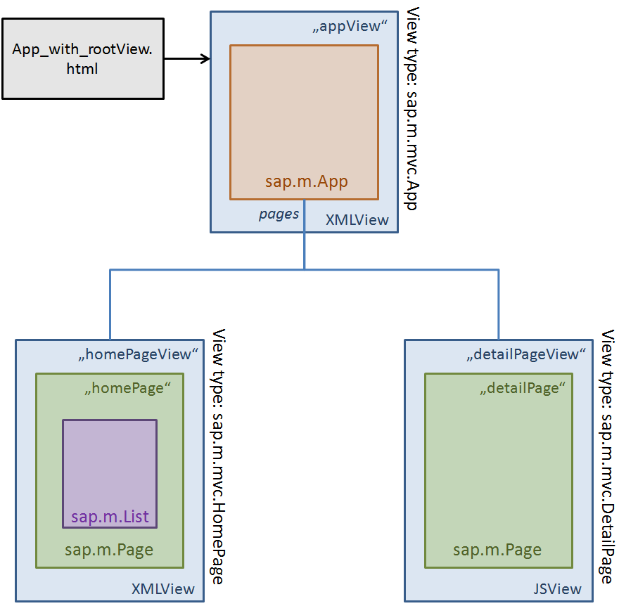

Using the Model View Controller Concept in Mobile Apps
The UI5 Model View Controller concept as described here can be equally used in UI5 Mobile applications.
The granularity of Views can be freely chosen; one possible approach is to use one View per page. This page illustrates such a usage of the MVC concept in order to decouple the different parts of the application. It is not supposed to provide a best practice but rather to illustrate the interaction of views. For a more complex example, see the Best Practice for Building Mobile Applications.
An MVC Demo Application
Overview
A simple Mobile application consisting of two pages is built to illustrate the MVC usage.
Three Views are used in total: one XMLView for the App control which forms the root level of the application, and two for the pages: one XMLView for the home page and one JSView for the detail page.
The home page displays a list of countries and tapping any of the countries will navigate to the detail page, displaying more information about this country.
IMPORTANT: The App control holds its child controls in the "pages" aggregation. This does NOT mean that only "sap.m.Page" controls can be aggregated. In contrary, this demo application will put the Views into the aggregation! Calling app.getPages() will therefore NOT return any sap.m.Page control, but both directly aggregated Views'''
The following image depicts the overall structure of the application. Note that the "homePageView" is displayed initially and the "detailPageView" is displayed when drilling down to details. The "appView" depicted above just holds the sap.m.App control which manages the page navigation. It does not have any visual UI, but is always rendered as a sort of invisible frame containing the application.

The HTML Page
The "App_with_rootView.html" HTML page launches the whole application. It is very minimal: it just
- loads SAPUI5
- ensures that all resources starting with "sap.m.mvc" (=the Views and Controllers) are loaded from locations relative to the HTML page
- instantiates the root View and places it into the "content" div element
<script id="sap-ui-bootstrap" src="../../../../resources/sap-ui-core.js" data-sap-ui-theme="sap_bluecrystal" data-sap-ui-libs="sap.m" > </script> <script> // let UI5 know that certain package (the one containing the Views/Controllers) is available locally (next to the HTML file) sap.ui.localResources("sap.m.mvc"); // define View and place it onto the HTML page sap.ui.xmlview("appView", "sap.m.mvc.App").placeAt("content"); // all other initialization will be done by the App controller </script>
The Root (App-) View
The root View and Controller could also be omitted by putting some code into the HTML file, but this example tries to use MVC as much as possible, so it shows how Views are embedded into others.
It is also very simple: one sap.m.App control which aggregates two sap.m.Pages. The first one is displayed initially:
<core:View controllerName="sap.m.mvc.App" xmlns="sap.m" xmlns:core="sap.ui.core" xmlns:mvc="sap.ui.core.mvc" xmlns:html="http://www.w3.org/1999/xhtml"> <App id="theApp"> <mvc:XMLView id="homePageView" viewName="sap.m.mvc.HomePage"></mvc:XMLView> <mvc:JSView id="detailPageView" viewName="sap.m.mvc.DetailPage"></mvc:JSView> </App> </core:View>
The viewNames define the View type and from which location each View is loaded. The AppView also defines a "controllerName", so a Controller is loaded and attached as well.
The Root (App-) Controller
The root Controller does two things:
- It takes care of loading the data (using an AJAX call, from a JSON file) and initializing the overall JSONModel
- It handles the page navigations by listening to events published by the Views and triggering the appropriate navigation on the App control using the EventBus
When the user taps a list item on the homePageView, it publishes a "to" event in the "nav" channel (see the respective section below) which this root controller listens to and then executes the "navToHandler" method. After lazy loading the view, if necessary, it calls this.app.to(data.id, data.data.context) to trigger navigation to the second page and to hand over the bindingContext (information about the selected item in the initial page).
By default this leads to a horizontal slide animation, but other animations could be chosen.
Back navigation is handled similarly, but simpler, as no data is needed to be passed and the App control keeps track of the page stack, so it automatically navigates back to the "homePageView" (using an inverse animation).
sap.ui.controller("sap.m.mvc.App", { onInit : function() { var view = this.getView(); // Data is fetched here jQuery.ajax("Data.json", { // load the data from a relative URL (the Data.json file in the same directory) dataType: "json", success: function(data){ var oModel = new sap.ui.model.json.JSONModel(data); view.setModel(oModel); } }); // remember the App Control this.app = view.byId("theApp"); // subscribe to event bus var bus = sap.ui.getCore().getEventBus(); bus.subscribe("nav", "to", this.navToHandler, this); bus.subscribe("nav", "back", this.navBackHandler, this); }, navToHandler : function(channelId, eventId, data) { if (data && data.id) { // lazy load view if (this.app.getPage(data.id) === null) { jQuery.sap.log.info("now loading page '" + data.id + "'"); this.app.addPage(sap.ui.jsview(data.id, "sap.m.mvc." + data.id)); } // Navigate to given page (include bindingContext) this.app.to(data.id, data.data.context); } else { jQuery.sap.log.error("nav-to event cannot be processed. Invalid data: " + data); } }, navBackHandler : function() { this.app.back(); } });
The HomePage View
The "HomePage" View is the content displayed initially. It contains a full-screen Page control which displays a List of countries. This List is constructed from a StandardListItem template using UI5 data binding. So for each country in the data one list item will be created and displayed.
<core:View controllerName="sap.m.mvc.HomePage" xmlns="sap.m" xmlns:core="sap.ui.core" xmlns:mvc="sap.ui.core.mvc" xmlns:html="http://www.w3.org/1999/xhtml"> <Page id="homePage" title="Countries"> <List items="{/countries}"> <StandardListItem title="{name}" description="{short}" type="Navigation" press="listItemTriggered"> <customData> <!-- this is an OPTIONAL way to bind additional data to each list item; when the item is pressed, this data is read in the Controller --> <core:CustomData key="id" value="{short}" /> </customData> </StandardListItem> </List> </Page> </core:View>
The attribute press="listItemTriggered" means that when a list item is pressed, the "listItemTriggered" method of the HomePage Controller should be called.
The HomePage Controller
The Controller connected to this View does nothing else than just handling the press on a list item by publishing the event to "nav" channel and handing over the relevant view (DetailPage) and the context of the pressed list item.
sap.ui.controller("sap.m.mvc.HomePage", { listItemTriggered: function(evt) { // Option 1: using custom data attached to the ListItem // The ID (abbreviation) of the country is available as a custom data object and... // ...we could use it to fetch detail data // ...or we could hand it over to the detail page with .to("detailPage", {id: id}); var id = evt.oSource.data("id"); // this id remains unused in this example, though! // Option 2: // In case of data binding we can get the binding context (a sort of pointer to the data object to which the clicked ListItem is bound) var bindingContext = evt.oSource.getBindingContext(); // evt.oSource is the ListItem // The EventBus is used to let the Root Controller know that a navigation should take place. // The bindingContext is attached to the data object here to be used in the Root Controller's event handler. var bus = sap.ui.getCore().getEventBus(); bus.publish("nav", "to", { id : "DetailPage", data : { context : bindingContext } }); } });
The DetailPage View
In order to also use View types other than XMLViews, the detail page has been built as a JSView. As always in JSViews, its "createContent" method constructs the UI of this View - which again contains one sap.m.Page control with a List and a VBox layout as content. The List displays some country details, using data binding, so the correct country data is displayed without actively fetching this data.
Two special parts of this View should be highlighted before listing the entire View content:
Triggering Back Navigation
While there are differences between platforms concerning the semantics of the button in the left of the page header (it is a "back" button on iOS and an "up" button on Android), the sap.m.Page just offers a "navigation button" and the application can decide whether there is a difference between "up" and "back" on the respective page and whether it wants to follow the platform guidelines to respect this difference.
In this case, up is the same as back, so we just display this button (giving the label "Countries", which only appears on iOS) and when pressed, the method "backTriggered" of the Controller of this View is called (see below). The second array entry is the context of this method, so when the method is executed, "this" is the Controller.
var oPage = new sap.m.Page({ title:"Details", showNavButton:true, navButtonText: "Countries", navButtonPress:[oController.backTriggered,oController] });
Of course an application could take shortcuts, e.g. by directly calling app.back() if the "app" object is known inside the View. This demo application, however, wants to demonstrate maximum decoupling.
Handling the Navigation Event
As described here, pages (or rather children of NavContainer/App controls, like this detail View) are informed about navigation activities. One can attach delegates to these pages to also get informed and do certain preparation or cleanup work.
The detail View wants to update the data binding every time before it is displayed, so it registers for "beforeShow" and sets the binding context (which has been passed by the root Controller as payload data of the "to(…)" call which triggered navigation to the detail page.
this.addEventDelegate({ onBeforeShow: function(evt) { this.setBindingContext(evt.data); // evt.to is actually this View (the navigation target). This should be "this" in the future to be more intuitive... } }, this); // give this (= the View) as additional parameter to make it available inside the delegate's functions as "this" object
Similarly, the "beforeFirstShow" event could be used by the application to lazily construct the UI only when it is actually required because the user navigates to this page - currently the View UI creation in "createContent" is executed on application startup.
The Entire View Code
sap.ui.jsview("sap.m.mvc.DetailPage", { getControllerName: function() { return "sap.m.mvc.DetailPage"; }, /** * Creates the UI of this View * * @returns {sap.ui.core.Control} */ createContent: function(oController) { var oPage = new sap.m.Page({ title:"Details", showNavButton:true, navButtonText: "Countries", navButtonPress:[oController.backTriggered,oController] }); // create the page content structure jQuery.sap.require("sap.ui.core.format.NumberFormat"); var oList = new sap.m.List({headerText: "Country Details", items: [ new sap.m.DisplayListItem({label:"Capital:",value:"{detailInfo/capital}"}), new sap.m.DisplayListItem({label:"Population:",value:{ path:"detailInfo/population", formatter:function(iValue){ var oFormatter = sap.ui.core.format.NumberFormat.getIntegerInstance({ // format the population count groupingEnabled: true, groupingSeparator: "." }); return oFormatter.format(iValue); } }}), new sap.m.DisplayListItem({label:"Currency:",value:"{detailInfo/currency}"}), new sap.m.DisplayListItem({label:"Area:",value:{ path:"detailInfo/area", formatter:function(iValue){ var oFormatter = sap.ui.core.format.NumberFormat.getIntegerInstance({ // format the area groupingEnabled: true, groupingSeparator: "." }); var formattedNumber = oFormatter.format(iValue); return formattedNumber + " sq km"; } }}) ]}); oPage.addContent(oList); var oFlagArea = new sap.m.VBox({ alignItems: sap.m.FlexAlignItems.Center, items: [ new sap.m.Label({text:"Flag:"}), new sap.m.Image({src:"{detailInfo/flagUrl}",decorative:true,densityAware:false}) ] }); oPage.addContent(oFlagArea); this.addEventDelegate({ onBeforeShow: function(evt) { this.setBindingContext(evt.data); // give this (= the View) as additional parameter to make it available inside the delegate's functions as "this" object } }, this); return oPage; } });
The DetailPage Controller
The Controller of the detail page is extremely simple, it just has the method which published the "back" event to the "nav" channel of the EventBus. The root Controller listens to this event and triggers back navigation.
sap.ui.controller("sap.m.mvc.DetailPage", { backTriggered: function() { var bus = sap.ui.getCore().getEventBus(); bus.publish("nav", "back"); } });